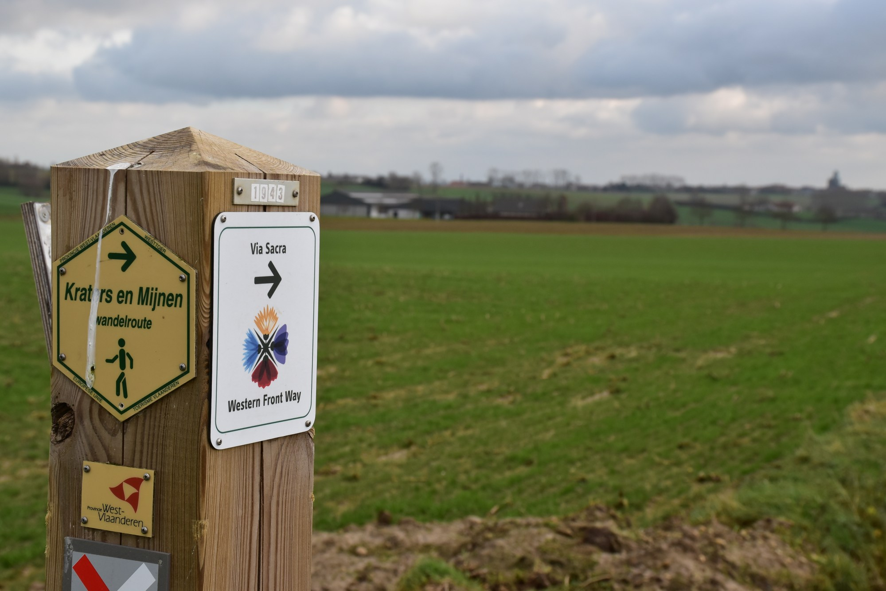

Western Front Trail, een nieuwe epische trailwalk
By Geraldine | Posted on februari 18, 2021De Via *Sacra – Western Front Way* loopt maar liefst 1.000 km langs No Man’s Land en de Westerse frontlijn. Vertrekkend vanuit Nieuwpoort tot aan Pfetterhouse aan de Frans-Zwitserse grens is het daarmee de langste wandelroute in Noordwest-Europa. De eerste 95 km loopt over Vlaamse bodem en verbindt Nieuwpoort met Diksmuide, Ieper en ten slotte Mesen.

De Western Front Way
Anno 2018 werd het plan gesmeed om een wandelroute te ontwikkelen langsheen de volledige Westerse frontlijn. Na talrijke meetings en afspraken met toeristische sectoren kwam de Western Front Way tot stand. Een Via Sacra die de herinnering aan de Eerste Wereldoorlog en haar meer dan 20 miljoen oorlogsslachtoffers levendig moet houden. De inspiratie komt uit een brief van Alexander Douglas Gillespie, een jonge soldaat die jammerlijk sneuvelde in 1915 bij de slag om Loos in Frankrijk. Drie maanden voordat hij stierf, schreef Alexander aan zijn oude schoolhoofd over de wandelroute en zijn droom.

Een nieuwe epische trailwalk
In navolging van het oorspronkelijk concept zal Wandelsport Vlaanderen vzw i.s.m. enkele plaatselijke wandelclubs jaarlijks een langeafstandswandelroute onder de naam Western Front Trail organiseren. De eerste editie vindt plaats op zaterdag 18 september 2021. Deelnemers krijgen de keuze uit drie epische afstanden: 35–60–85 km. Naargelang het gekozen traject kom je voorbij de voornaamste herdenkingssites uit de Groote Oorlog. De 85 km start vanuit Mesen, de kleinste stad van België. Deelnemers aan de 60 km starten in de schaduw van de imposante Menenpoort in Ieper. De IJzertoren, symbool van Nooit Meer Oorlog, in Diksmuide vormt de start voor de 35 km. Het eindpunt voor alle deelnemers is Westfront Nieuwpoort.